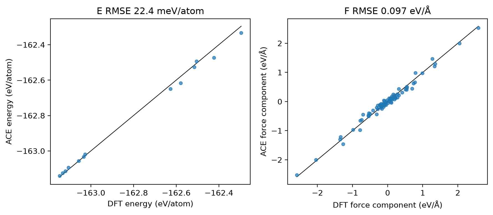
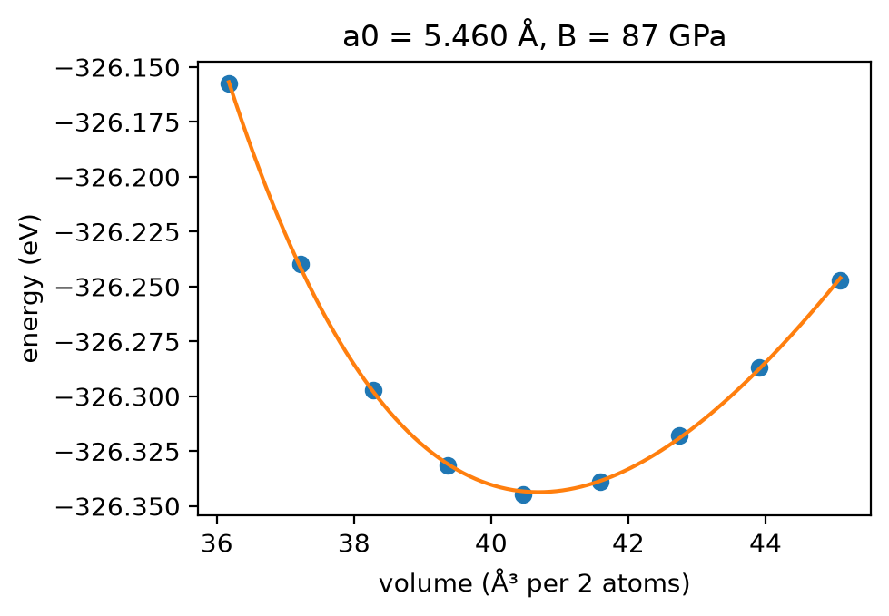
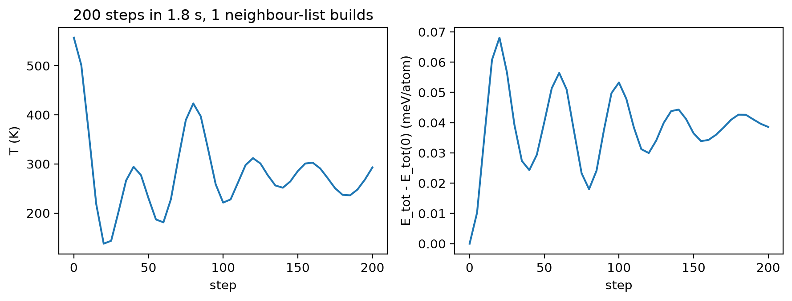

Tutorial 1: a first ACE fit for silicon¶
In this notebook you build an ACE basis, fit a linear ACE model to a small silicon dataset, check it on test data, and then use it as an ASE calculator for an equation of state and a short molecular-dynamics run. Everything runs on a CPU in a few minutes.
Goals
- Build an ACE basis and know what
orderandmax_degreecontrol. - Fit it with ace-jax's evidence-based linear fit, and read the test metrics.
- Judge the fit with a parity plot, not just an RMSE.
- Use the fitted model in ASE: an equation of state and NVE molecular dynamics.
Each step ends with a checkpoint cell that tells you whether the step worked. The exercises at the end change one thing at a time; the notebook re-runs only what depends on the change.
Run this notebook. Install uv. Then run this command:
uvx marimo edit --sandbox https://raw.githubusercontent.com/ACEsuit/ace-jax/main/docs/user/tutorials/notebooks/first_fit_si.py
The notebook opens in your browser. You do not need an account. You can also open the notebook in molab, the marimo hosted service. You must sign in to run it there.
This website shows a static copy of the notebook, run on a CPU when the site was built. The interactive controls show their default values. Run time: approximately 1 minute (the fit takes approximately 30 s).
import os
import pathlib
import time
import urllib.request
import jax
jax.config.update("jax_enable_x64", True) # fitting needs float64
import marimo as mo
import matplotlib.pyplot as plt
import numpy as np
from ase.io import read, write
import ace_jax as aj
from ace_jax import ACECalculator
Step 1: the data¶
si_tiny_train.xyz is a 53-configuration silicon dataset from the
ace-jax test fixtures: 2-atom diamond and β-tin cells, two 64-atom liquid
snapshots and one isolated atom, labelled with DFT. The labels are stored
under dft_energy, dft_force and dft_virial.
The cell below uses the copy in your ace-jax checkout if this notebook is run from one, and otherwise downloads it from GitHub.
work = pathlib.Path("ace_jax_tutorial_1")
work.mkdir(exist_ok=True)
URL = "https://raw.githubusercontent.com/ACEsuit/ace-jax/main/fixtures/si_tiny_train.xyz"
_local = mo.notebook_dir() / "../../../../fixtures/si_tiny_train.xyz" if mo.notebook_dir() else None
data_file = work / "si_tiny_train.xyz"
if _local is not None and _local.exists():
data_file.write_bytes(_local.read_bytes())
elif not data_file.exists():
urllib.request.urlretrieve(URL, data_file)
keys = dict(energy_key="dft_energy", force_key="dft_force", virial_key="dft_virial")
frames = read(data_file, ":")
_kinds = {}
for _a in frames:
_kinds.setdefault(_a.info["config_type"], []).append(len(_a))
# Leave the isolated atom out: its energy is the reference energy E0 itself,
# and the fit below determines E0 from the bulk energies (e0="lsq").
bulk_frames = [_a for _a in frames if _a.info["config_type"] != "isolated_atom"]
train_file, test_file = work / "train.xyz", work / "test.xyz"
write(test_file, bulk_frames[::4])
write(train_file, [_a for _i, _a in enumerate(bulk_frames) if _i % 4])
mo.md(
"| config_type | configs | atoms each |\n|---|---|---|\n"
+ "\n".join(f"| `{k}` | {len(v)} | {sorted(set(v))} |" for k, v in _kinds.items())
+ f"\n\nTraining set: **{len(bulk_frames) - len(bulk_frames[::4])}** configs, "
f"test set: **{len(bulk_frames[::4])}** configs (every fourth bulk config)."
)
| config_type | configs | atoms each |
|---|---|---|
isolated_atom |
1 | [1] |
dia |
25 | [2] |
bt |
25 | [2] |
liq |
2 | [64] |
Training set: 39 configs, test set: 13 configs (every fourth bulk config).
Step 2: build a basis¶
An ACE basis is set by the elements, the correlation order (how many
neighbours each basis function couples; order 3 means four-body terms) and
the maximum total degree, which bounds the polynomial degree and so the
basis size. radial_mode="onehot" (the default) uses the radial
polynomials themselves as the radial basis.
BasisSpec describes the basis and build_basis builds it; the first
build of a new shape computes its coupling coefficients (milliseconds) and
caches them. On the command line, aj fit --order 3 --max-degree 10 ...
builds the same basis inside the fit, and
aj basis saves one on its own.
max_degree = mo.ui.dropdown(options=["8", "10", "12"], value="10", label="max degree")
radial_mode = mo.ui.dropdown(options=["onehot", "glorot_normal"], value="onehot", label="radial mode")
mo.hstack([max_degree, radial_mode], justify="start")
Interactive controls in the notebook (this page shows their defaults): max degree = 10, radial mode = onehot
from ace_jax.basis.model import BasisSpec, build_basis
spec = BasisSpec(order=3, max_degree=int(max_degree.value), elements=("Si",),
radial_mode=radial_mode.value)
basis = build_basis(spec)
mo.md(f"Basis: **{basis.meta['len_basis']}** functions ({basis.meta['n_B']} many-body, "
f"{basis.meta['n_pair']} pair), cutoff {basis.meta['rcut']} Å")
Basis: 120 functions (110 many-body, 10 pair), cutoff 5.5 Å
Step 3: fit¶
aj fit and the Python pipeline below solve the same problem: Bayesian
linear regression of the energies, forces and virials on the basis. The
noise levels of the three quantities and the prior scale of the
coefficients are not hand-tuned weights: they are chosen by maximising
the evidence (the marginal likelihood), here with L-BFGS.
The command-line equivalent is
aj fit --order 3 --max-degree 10 --train train.xyz --test test.xyz \
--energy-key dft_energy --force-key dft_force --virial-key dft_virial \
--e0 lsq --opt lbfgs --out fit
FitConfig(model=...) takes the Basis built above, a BasisSpec
(built inside the fit from the species in the data) or the path of a
saved basis file. r0=None centres the hyperprior on the basis's mean
bond length, as the command line does.
from ace_jax.fit.pipeline import FitConfig, fit, load_fit_data, save_model
_t = time.time()
cfg = FitConfig(model=basis, arm="linear", m_per_species=0, e0="lsq",
opt="lbfgs", r0=None, rungs=("map",), predict_stats="recompute", predict_train=False,
**keys).validate()
_data = load_fit_data(cfg, train=str(train_file), test=str(test_file))
result = fit(cfg, _data)
model_file = save_model(result, work / "fit")
fit_seconds = time.time() - _t
test_metrics = result.preds.metrics["test/map"]
mo.md(
f"Fitted in {fit_seconds:.0f} s → `{model_file}`\n\n"
"| quantity | test RMSE | coverage (±1σ) |\n|---|---|---|\n"
+ "\n".join(f"| {q} ({u}) | {test_metrics[q]['rmse']:.4g} | {test_metrics[q]['coverage']:.2f} |"
for q, u in (("E", "meV/atom"), ("F", "eV/Å"), ("V", "eV")))
)
lbfgs start 0 eval 1 logpost = -28476.8 (0 s)
lbfgs start 0 eval 2 logpost = -3364.11 (0 s)
lbfgs start 0 eval 3 logpost = -3262.51 (0 s)
lbfgs start 0 eval 4 logpost = -2857.51 (0 s)
lbfgs start 0 eval 5 logpost = -1296.41 (0 s)
lbfgs start 0 eval 6 logpost = -1.47134e+09 (0 s)
lbfgs start 0 eval 7 logpost = -8043.61 (0 s)
lbfgs start 0 eval 8 logpost = -740.346 (0 s)
lbfgs start 0 eval 9 logpost = -2794.11 (0 s)
lbfgs start 0 eval 10 logpost = -496.002 (0 s)
lbfgs start 0 eval 11 logpost = -670.009 (0 s)
lbfgs start 0 eval 12 logpost = -421.171 (0 s)
lbfgs start 0 eval 13 logpost = -372.082 (0 s)
lbfgs start 0 eval 14 logpost = -290.715 (0 s)
lbfgs start 0 eval 15 logpost = -264.442 (0 s)
lbfgs start 0 eval 16 logpost = -257.089 (0 s)
lbfgs start 0 eval 17 logpost = -255.741 (0 s)
lbfgs start 0 eval 18 logpost = -255.632 (0 s)
lbfgs start 0 eval 19 logpost = -255.557 (0 s)
lbfgs start 0 eval 20 logpost = -255.472 (0 s)
lbfgs start 0 eval 21 logpost = -255.471 (0 s)
lbfgs start 0 eval 22 logpost = -255.471 (0 s)
lbfgs start 0 eval 23 logpost = -255.471 (0 s)
L-BFGS start 0: logpost -255.471 nfev 23 CONVERGENCE: RELATIVE REDUCTION OF F <= FACTR*EPSMCH
L-BFGS: best of 1 start(s) = start 0, logpost -255.471
Newton polish (exact Hessian, column-wise HVPs): converged (|pg| 5.75e-12 within 10x the gradient roundoff 6.0e-12); 2 step(s), 3 Hessian(s), 12 HVPs, 16 gradient evaluations, 0.3 s
MAP: stationary (predicted gain 4e-25 nats), logpost -255.4705441
test map {'E': {'rmse': 22.4313, 'crps': 13.895, 'coverage': 0.1538, 'rho': 0.5769, 'rms_z': 3.7809}, 'F': {'rmse': 0.0975, 'crps': 0.0657, 'coverage': 0.1795, 'rho': 0.3423, 'rms_z': 4.3845}, 'V': {'rmse': 0.2896, 'crps': 0.1681, 'coverage': 0.2308, 'rho': 0.4791, 'rms_z': 3.4612}}
RMSE, test (map)
-----------------------------------------------------------------
config type configs atoms E (meV/atom) F (eV/Å) V (meV/atom)
-----------------------------------------------------------------
bt 6 12 32.23 0.0993 198.91
dia 7 14 6.62 0.0959 70.87
-----------------------------------------------------------------
all 13 26 22.43 0.0975 144.80
Fitted in 13 s → ace_jax_tutorial_1/fit/model.npz
| quantity | test RMSE | coverage (±1σ) |
|---|---|---|
| E (meV/atom) | 22.43 | 0.15 |
| F (eV/Å) | 0.09749 | 0.18 |
| V (eV) | 0.2896 | 0.23 |
Checkpoint 1 passed: test force RMSE below 0.2 eV/Å and energy RMSE below 50 meV/atom.
Step 4: parity plot¶
An RMSE hides where the errors are. Evaluate the fitted model on the
test set with the ASE calculator and plot predictions against the labels.
skin=0 builds a fresh neighbour list for each structure, the right
choice for a set of unrelated structures.
from ase import Atoms
from ace_jax.fit.data import load_configs # libAtoms extxyz reader: labels as written
calc = ACECalculator(str(model_file), skin=0)
_E_ref, _E_fit, _F_ref, _F_fit = [], [], [], []
for _c in load_configs(str(test_file), **keys):
_at = Atoms(numbers=_c.numbers, positions=_c.positions, cell=_c.cell, pbc=_c.pbc)
_at.calc = calc
_E_ref.append(_c.energy / len(_at)); _E_fit.append(_at.get_potential_energy() / len(_at))
_F_ref.append(_c.forces.ravel()); _F_fit.append(_at.get_forces().ravel())
parity = {"E_ref": np.array(_E_ref), "E_fit": np.array(_E_fit),
"F_ref": np.concatenate(_F_ref), "F_fit": np.concatenate(_F_fit)}
_fig, (_a1, _a2) = plt.subplots(1, 2, figsize=(9, 4))
for _ax, _r, _f, _lab in ((_a1, parity["E_ref"], parity["E_fit"], "energy (eV/atom)"),
(_a2, parity["F_ref"], parity["F_fit"], "force component (eV/Å)")):
_lo, _hi = min(_r.min(), _f.min()), max(_r.max(), _f.max())
_ax.plot([_lo, _hi], [_lo, _hi], "k-", lw=0.8)
_ax.plot(_r, _f, "o", ms=4, alpha=0.7)
_ax.set_xlabel("DFT " + _lab); _ax.set_ylabel("ACE " + _lab)
_rmse = 1e3 * np.sqrt(np.mean((parity["E_fit"] - parity["E_ref"]) ** 2))
_a1.set_title(f"E RMSE {_rmse:.1f} meV/atom")
_a2.set_title(f"F RMSE {np.sqrt(np.mean((parity['F_fit'] - parity['F_ref']) ** 2)):.3f} eV/Å")
_fig.tight_layout()
_fig

Checkpoint 2 passed: the calculator's energy RMSE (22.431 meV/atom) matches the fit's.
Step 5: equation of state¶
The training set holds strained diamond and β-tin cells. Scan the volume of the diamond cell and fit a Birch–Murnaghan equation of state. The experimental lattice constant of silicon is 5.43 Å and its bulk modulus about 98 GPa; DFT with this functional gives a slightly larger lattice constant.
from ase.build import bulk
from ase.eos import EquationOfState
from ase.units import GPa
_vols, _ens = [], []
for _a in np.linspace(5.25, 5.65, 9):
_at = bulk("Si", "diamond", a=_a)
_at.calc = calc
_vols.append(_at.get_volume()); _ens.append(_at.get_potential_energy())
_eos = EquationOfState(_vols, _ens, eos="birchmurnaghan")
v0, e0, B = _eos.fit()
a0 = (4 * v0) ** (1 / 3) # the 2-atom primitive cell holds a quarter of the cubic cell
_fig, _ax = plt.subplots(figsize=(5, 3.5))
_ax.plot(_vols, _ens, "o")
_v = np.linspace(min(_vols), max(_vols), 100)
_ax.plot(_v, _eos.func(_v, *_eos.eos_parameters), "-")
_ax.set_xlabel("volume (ų per 2 atoms)"); _ax.set_ylabel("energy (eV)")
_ax.set_title(f"a0 = {a0:.3f} Å, B = {B / GPa:.0f} GPa")
_fig.tight_layout()
_fig

Checkpoint 3 passed: a0 = 5.460 Å and B = 87 GPa are physical for silicon.
Step 6: molecular dynamics¶
Run 200 steps (0.2 ps) of constant-energy (NVE) dynamics on a 64-atom
diamond cell started at 600 K. The calculator keeps a Verlet neighbour
list (skin=1.0 Å by default) and rebuilds it only when atoms have moved
far enough, so each step is one compiled call. A good potential conserves
the total energy.
from ase import units
from ase.md.verlet import VelocityVerlet
try: # ASE >= 3.29
from ase.md.velocitydistribution import thermalize_momenta as _thermalize
except ImportError:
from ase.md.velocitydistribution import MaxwellBoltzmannDistribution as _thermalize
_at = bulk("Si", "diamond", a=5.43, cubic=True).repeat(2)
_at.calc = ACECalculator(str(model_file))
_thermalize(_at, temperature_K=600, rng=np.random.default_rng(0))
_dyn = VelocityVerlet(_at, 1.0 * units.fs)
_etot, _temp = [], []
_dyn.attach(lambda: (_etot.append(_at.get_total_energy()), _temp.append(_at.get_temperature())), interval=5)
_t = time.time()
_dyn.run(200)
md_seconds = time.time() - _t
drift = (max(_etot) - min(_etot)) / len(_at)
_fig, (_a1, _a2) = plt.subplots(1, 2, figsize=(9, 3.5))
_steps = np.arange(len(_etot)) * 5
_a1.plot(_steps, _temp); _a1.set_xlabel("step"); _a1.set_ylabel("T (K)")
_a2.plot(_steps, (np.array(_etot) - _etot[0]) * 1e3 / len(_at))
_a2.set_xlabel("step"); _a2.set_ylabel("E_tot - E_tot(0) (meV/atom)")
_a1.set_title(f"200 steps in {md_seconds:.1f} s, "
f"{_at.calc.last_timing['rebuilds']} neighbour-list builds")
_fig.tight_layout()
_fig

Checkpoint 4 passed: the total energy stays within 0.068 meV/atom over 0.2 ps.
Exercises¶
- Basis size. Change max degree to 8 and to 12 in Step 2. How do the basis size and the test errors change? With 39 small training cells, does a bigger basis keep helping? Why is degree 8 so much worse in energy than in forces?
- Radial basis. Switch radial mode to
glorot_normal, which mixes the radial polynomials with seeded random weights. Compare the test errors. Tutorial 2 shows how to learn the radial weights instead of keeping them frozen. - E0 and the isolated atom. In Step 1, add the isolated atom (the
first frame) to the training set: append
+ frames[:1]to the list written totrain_file. How do the fitted E0 (np.load(...)["E0"]of the saved model) and the test errors change? (Hint: an isolated atom has no neighbours, so its predicted energy is E0 alone.) - β-tin. Repeat the equation of state for β-tin
(
bulk("Si", "beta-tin", a=4.9, c=2.7)is a reasonable start) and compare the two energy minima per atom.
Hint for exercise 1
Degree 8 gives 62 functions, too few to fit energies and forces together: it cannot separate diamond from beta-tin. The evidence then treats the energies as noise (a large result.theta.log_sigma_E, about -1.5 against -4.1 at degree 10) and fits the forces. Test E RMSE: about 180, 22 and 14 meV/atom at degrees 8, 10 and 12.
Hint for exercise 3
An atom with no neighbours is predicted as E0 alone, so with e0='lsq' an isolated atom in the training set sets the E0 of its species to its energy exactly (-158.545 eV here). Without one, E0 is fitted with the model, to -161.90 eV: it is then only a reference level, not a free-atom energy. The bulk is fitted relative to it either way, and the test errors barely move (22 to 24 meV/atom and 0.10 eV/A).
Summary¶
build_basis(BasisSpec(...))(oraj fit --order ... --max-degree ...) makes an unfitted basis;orderandmax_degreeset its size.- The linear fit picks its own energy/force/virial weights by evidence
maximisation;
e0="lsq"fits the reference energies. ACECalculatorturns the fittedmodel.npzinto an ASE calculator that is fast enough for molecular dynamics.
Next: Tutorial 2 learns the radial basis.